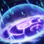

El Dispositivo Z de Ekko carga sus hechizos y ataques de energía temporal. De cada tres golpes, el último causa daño adicional. Además, si el objetivo es un campeón, Ekko gana velocidad de movimiento.
Engranaje temporal
Coste: 50/60/70/80/90 maná
Alcance: 1075
Ekko lanza una granada temporal que, al alcanzar a un campeón enemigo, genera un campo de distorsión cronológica. Las unidades sorprendidas en su interior sufren daño y quedan ralentizadas. Al cabo de unos instantes, la granada regresa a Ekko y daña a todo cuanto se encuentre en su camino.
Ekko lanza un dispositivo que inflige 60/75/90/105/120 (+30% Poder de Habilidad) de daño mágico a los enemigos por los que pasa. Al encontrarse con un primer campeón se expande y crea un campo que ralentiza un 32/39/46/53/60% a todas las unidades atrapadas en su interior. Tras unos momentos regresa a Ekko e inflige 40/65/90/115/140 (+60% Poder de Habilidad) de daño mágico a todas las unidades situadas en su trayectoria.

Convergencia paralela
Coste: 50/55/60/65/70 de maná
Alcance: 1600
Ekko rompe la línea temporal y, al cabo de unos segundos, crea una anomalía que ralentiza a los enemigos situados dentro. Si el propio Ekko entra en ella, recibe un escudo y provoca una detonación que aturde a los enemigos al dejarlos congelados en el tiempo.
Pasiva: Los ataques básicos de Ekko infligen daño mágico adicional a los enemigos con menos de un 30% de vida. Este daño equivale a un 3% (+[3% Poder de Habilidad]%) de la vida que les falte. Inflige un mínimo de 15 de daño y un máximo de 150 de daño contra súbditos y monstruos.
Activa: Al cabo de 3 s, Ekko crea una cronosfera de corta duración que ralentiza un 40% a todos los enemigos que penetren en ella. Si es Ekko el que entra, la cronosfera explota y le confiere un escudo capaz de absorber hasta 80/100/120/140/160 (+150% Poder de Habilidad) de daño durante 2 s. Los enemigos atrapados en su interior quedan aturdidos durante 1.75 s.
Salto de fase
Coste: 40/50/60/70/80 de maná
Alcance: 325
Ekko rueda por el suelo en un movimiento evasivo mientras activa su Dispositivo Z. Su siguiente ataque inflige daño adicional y distorsiona la realidad para teleportarlo hasta su objetivo.
Ekko se desplaza una corta distancia en la dirección indicada. Su siguiente ataque causa 40/65/90/115/140 (+40% Poder de Habilidad) de daño mágico adicional y lo teleporta hasta su objetivo.
Fisura temporal
Coste: 100 de maná
Alcance: 850
Ekko fragmenta su línea temporal y se vuelve imposible de seleccionar como objetivo mientras regresa a un momento pasado más favorable. Reaparece en el mismo sitio donde se encontraba unos segundos antes y recupera una parte de la vida que hubiera perdido en ese tiempo. Los enemigos situados cerca de su zona de llegada reciben muchísimo daño.
Ekko retrocede en el tiempo, por lo que se vuelve invulnerable e imposible de seleccionar como objetivo brevemente. Además, regresa al sitio en el que se encontraba 4 s antes e inflige 150/300/450 (+150% Poder de Habilidad) de daño mágico a los enemigos cercanos cuando aparece. También se cura 100/150/200 (+60% Poder de Habilidad) de vida, que aumenta en un 3% por cada 1% de la vida que ha perdido en los últimos 4 s.